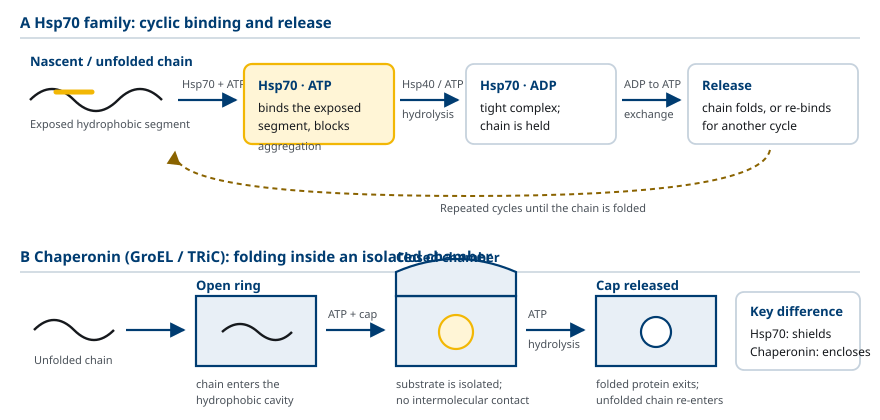
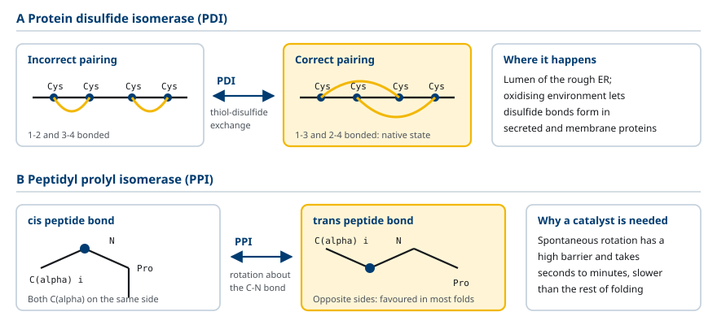
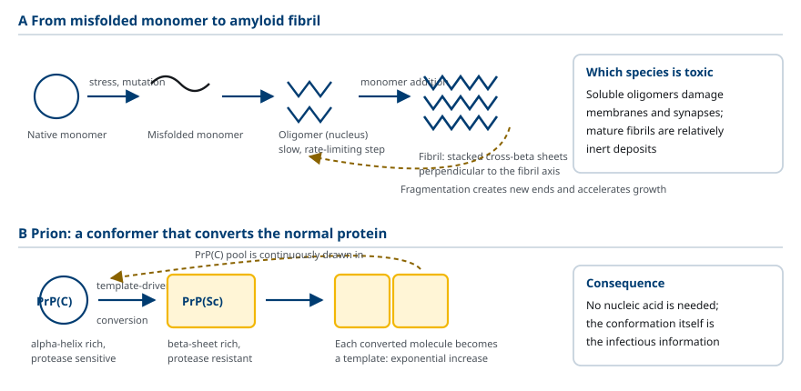
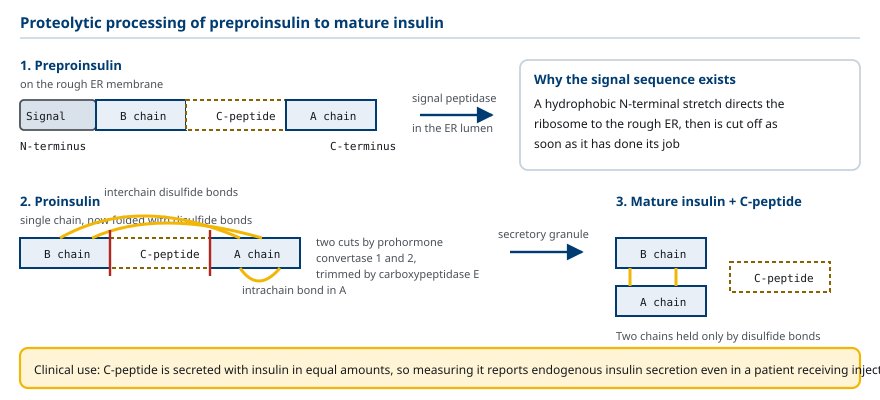
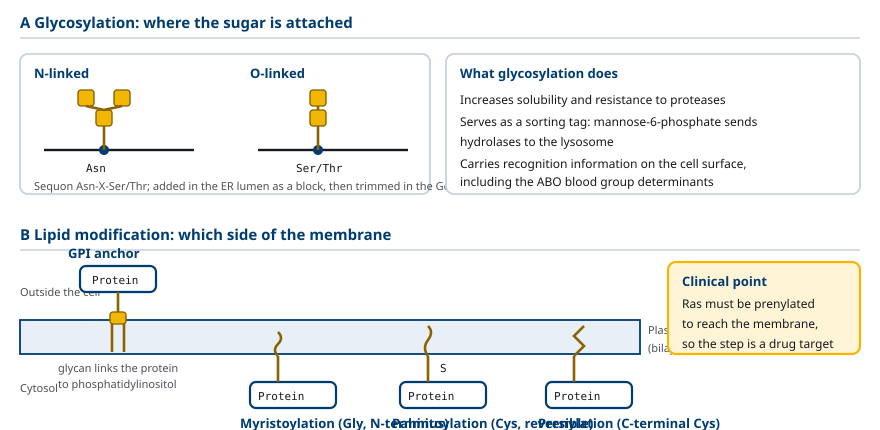
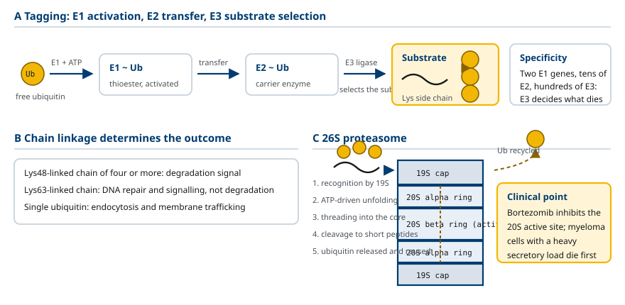

M01-W08-L01 · 인체일반생물학과 기초세포생물학
번역 후 가공, 단백질 접힘과 분해
Post-translational Processing, Protein Folding and Degradation
학습목표
- 세포 안에서 단백질 접힘이 시험관과 다른 조건에 놓이는 이유를 설명하고 chaperone이 필요한 근거를 든다.
- Hsp70 계열과 chaperonin의 작용 방식을 ATP 소비 주기와 함께 구분해 설명한다.
- Protein disulfide isomerase와 peptidyl prolyl isomerase가 촉매하는 반응을 쓰고 두 효소가 접힘 속도를 제한하는 단계를 지목한다.
- Amyloid 형성 과정을 단계별로 기술하고 prion이 자기 증식하는 기전을 설명한다.
- Proteolytic processing이 활성을 조절하는 예를 proinsulin과 zymogen으로 설명한다.
- N-linked glycosylation, O-linked glycosylation, GPI anchor, lipid 부가의 위치와 기능을 구분한다.
- Ubiquitin-proteasome 경로의 단계를 E1·E2·E3와 26S proteasome의 역할로 나누어 설명한다.
- 단백질 반감기를 결정하는 요소를 들고 분해 조절이 깨질 때 세포에 생기는 결과를 예측한다.
선수지식
- M01-W07-L03 단백질 합성: ribosome과 번역의 단계 — ribosome 구조, 개시·신장·종결, polysome
- M01-W05-L02 생체분자와 막의 구조 — 아미노산의 성질, peptide 결합, 단백질의 1~4차 구조
- M01-W06-L02 유전정보의 흐름 — central dogma, mRNA 가공
강의 구성
- 1. 번역 후 성숙 과정과 접힘 문제
- 2. Chaperone의 종류와 작용 방식
- 3. 접힘을 촉매하는 효소
- 4. 잘못 접힌 단백질의 응집과 amyloid
- 5. Proteolytic processing: 자르기로 활성을 만든다
- 6. 당과 지질의 부가
- 7. 가역적 covalent 수식에 의한 기능 조절
- 8. Ubiquitin-proteasome 경로에 의한 선택적 분해
- 9. 단백질 수명의 결정과 조절의 생물학적 결과
1. 번역 후 성숙 과정과 접힘 문제
Ribosome이 만들어 내는 것은 아미노산이 한 줄로 이어진 polypeptide다. 이 사슬은 아직 기능이 없다. 기능을 가진 단백질이 되려면 고유한 3차 구조로 접히고, 많은 경우 일부가 잘려 나가고, 당이나 지질이 붙고, 제 위치로 운반되어야 한다. 이 전체 과정을 번역 후 가공(post-translational processing) 또는 단백질 성숙(maturation)이라 한다.
접힘이 왜 문제인가를 먼저 분명히 해야 한다. Anfinsen은 1960년대에 ribonuclease A를 변성시킨 뒤 변성제를 제거하면 활성이 회복된다는 것을 보였다. 이 실험의 결론은 단백질의 3차 구조 정보가 아미노산 서열 안에 들어 있다는 것이다. 즉 접힘은 원리적으로 자발적이며, 접힌 상태가 열역학적으로 가장 안정하다.
그러나 자발적이라는 사실이 빠르다는 뜻은 아니다. 100개 잔기의 사슬이 가질 수 있는 구조의 수는 천문학적이므로, 모든 구조를 차례로 시험해 최저 에너지 상태를 찾는 방식으로는 접힘이 끝나지 않는다(Levinthal의 논증). 실제 접힘은 무작위 탐색이 아니라 국소 구조가 먼저 생기고 그것들이 모여 소수성 핵을 만드는 단계적 과정이며, 중간에 소수성 면이 노출된 부분 접힘 상태를 거친다.
세포 안의 조건은 시험관과 세 지점에서 다르다.
- 사슬이 순차적으로 나온다. N-말단이 ribosome 밖으로 나온 뒤 C-말단이 합성되기까지 수십 초가 걸린다. 그 사이 N-말단 부분은 짝이 될 C-말단 없이 노출되어 있다.
- 농도가 매우 높다. 세포질의 단백질 농도는 200~300 mg/mL 수준이다. 부분 접힘 상태의 노출된 소수성 면들이 서로 만나 응집(aggregation)할 확률이 높다.
- 동시에 수만 종이 접힌다. 같은 단백질끼리만 모이는 것이 아니라 종이 다른 사슬끼리도 비특이적으로 붙을 수 있다.
따라서 세포는 접힘을 돕는 장치를 따로 갖는다. 이 장치가 chaperone이다. Chaperone은 접힌 구조의 정보를 제공하지 않는다. 정보는 여전히 서열에 있다. Chaperone이 하는 일은 잘못된 경로로 가는 것을 막는 것, 구체적으로 노출된 소수성 면을 가려 응집을 방지하고 잘못 접힌 중간체를 풀어 다시 시도하게 하는 것이다.
2. Chaperone의 종류와 작용 방식
Chaperone은 대부분 heat shock protein(Hsp)으로 처음 동정되었다. 고온이나 산화 스트레스에서 단백질 변성이 늘어나면 이들의 발현이 증가하기 때문이다. 분자량에 따라 Hsp70, Hsp60, Hsp90, Hsp104 등으로 분류하고, 작용 방식에 따라 크게 두 무리로 나눈다.
Hsp70 계열 — 노출된 사슬을 붙잡는다 Hsp70은 7~8개 잔기 길이의 소수성 구간을 인식해 결합한다. 접힌 단백질에서 이런 구간은 안쪽에 묻혀 있으므로, Hsp70이 붙는다는 것 자체가 그 사슬이 아직 접히지 않았다는 신호다. 작용에는 ATP 가수분해가 필요하다. ATP가 붙은 상태에서는 기질과의 친화도가 낮고, ATP가 가수분해되어 ADP 상태가 되면 기질을 꽉 붙잡는다. 동반 인자인 Hsp40(bacteria의 DnaJ)이 기질을 데려오고 ATP 가수분해를 촉진하며, nucleotide 교환인자가 ADP를 ATP로 바꾸어 기질을 놓게 한다. 이 붙잡기와 놓기의 반복이 사슬을 응집으로부터 보호하면서 스스로 접힐 기회를 준다.
Hsp70의 작용 지점은 세 곳이다. 첫째, ribosome에서 나오는 사슬에 바로 붙어 번역이 끝날 때까지 보호한다. 둘째, 미토콘드리아와 ER로 수송되는 단백질을 풀린 상태로 유지해 막 통과가 가능하게 한다. 셋째, 스트레스로 변성된 단백질에 붙어 재접힘이나 분해로 보낸다. 두 번째 역할은 chaperone이 "접힘을 돕는다"는 서술과 반대 방향으로 보이지만, 막을 통과하려면 사슬이 펴진 상태여야 하므로 같은 원리의 다른 적용이다.
Chaperonin — 통 안에 가두어 접게 한다 Hsp60 계열(bacteria의 GroEL, 진핵세포 세포질의 TRiC/CCT, 미토콘드리아의 Hsp60)은 고리 모양 subunit이 두 층으로 쌓인 통 구조다. GroEL은 7개 subunit의 고리 두 개로 이루어지고, 뚜껑 역할을 하는 GroES가 한쪽을 덮는다. 부분 접힘 상태의 단백질이 통 안으로 들어가고 GroES가 닫히면, 그 사슬은 다른 분자와 만날 수 없는 격리된 공간에서 접힌다. ATP 가수분해에 따라 통의 내벽이 소수성에서 친수성으로 바뀌어 기질을 벽에서 떼어 내고, 약 10초 주기로 뚜껑이 열려 기질을 내보낸다. 접히지 않았으면 다시 들어간다.

Hsp90 — 거의 접힌 단백질의 최종 단계를 맡는다 Hsp90의 기질은 풀린 사슬이 아니라 거의 접혔으나 불안정한 상태의 단백질이다. 기질 목록에는 steroid hormone receptor, 여러 protein kinase, 전사인자가 들어 있다. Hsp90은 이들을 리간드와 결합할 수 있는 상태로 유지한다. Hsp90 억제제가 항암제 후보로 연구되는 이유가 여기에 있다. 종양 세포는 돌연변이로 불안정해진 kinase를 Hsp90에 의존해 유지하므로, Hsp90을 막으면 그 kinase들이 함께 분해된다.
여러 chaperone은 순차적으로 작용한다. 번역 중에 Hsp70이 먼저 붙어 보호하고, 사슬이 완성되면 일부 단백질은 chaperonin으로 넘어가 접힘을 마치고, 조절 단백질은 Hsp90으로 전달되어 활성 가능한 상태로 유지된다. 접힘에 끝내 실패한 사슬은 chaperone에 오래 붙어 있게 되고, 이것이 분해 경로로 보내는 신호가 된다.
3. 접힘을 촉매하는 효소
Chaperone이 응집을 막는 동안에도 접힘 자체가 느릴 수 있다. 공유 결합의 재배치나 결합 회전이 필요한 두 단계가 특히 느리며, 각각을 촉매하는 효소가 있다.
Protein disulfide isomerase(PDI) 두 cysteine의 thiol(-SH)이 산화되어 생기는 disulfide 결합(-S-S-)은 분비 단백질과 세포 표면 단백질의 구조를 고정한다. 문제는 cysteine이 여러 개일 때 어느 쌍끼리 짝을 지을지가 정해져 있지 않다는 점이다. 6개의 cysteine을 가진 단백질에서 가능한 짝짓기 조합은 15가지이고, 그중 하나만 옳다. PDI는 자신의 활성부위 cysteine을 써서 잘못 연결된 disulfide를 끊고 다시 잇는 교환 반응을 반복시켜, 열역학적으로 가장 안정한 짝짓기로 수렴하게 한다. PDI는 ER 내강에 다량 존재하며, ER 내강은 세포질보다 산화적 환경이어서 disulfide가 유지된다. 세포질은 glutathione에 의해 환원적으로 유지되므로 세포질 단백질에는 안정한 disulfide 결합이 드물다.
Peptidyl prolyl isomerase(PPI) Peptide 결합은 보통 trans 배치를 취하지만, proline 앞의 peptide 결합은 cis와 trans의 에너지 차이가 작아 두 배치가 모두 존재한다. 자발적인 cis–trans 전환은 결합 회전이 막혀 있어 매우 느려 수 분에서 수십 분이 걸린다. 접힌 구조가 특정 배치를 요구하면 이 전환이 접힘 전체의 rate-limiting step이 된다. PPI는 이 결합의 회전 장벽을 낮춰 전환을 촉진한다. Cyclosporin A와 FK506이 결합하는 단백질(cyclophilin, FKBP)이 PPI 활성을 가진 효소이며, 면역억제 작용은 이 효소가 억제제와 복합체를 이루어 calcineurin을 막는 데서 온다.

4. 잘못 접힌 단백질의 응집과 amyloid
접힘 품질 관리가 실패하면 잘못 접힌 단백질이 쌓인다. 결과는 두 가지다. 기능하는 단백질이 모자라는 기능 상실과, 응집체 자체가 세포에 해를 주는 독성 획득이다.
응집체의 형태 가운데 특히 안정한 것이 amyloid다. 서로 다른 단백질에서 출발해도 amyloid의 구조는 공통적이다. 사슬이 β-strand로 펴져 섬유 축에 수직으로 배열되고, 이 strand들이 수소결합으로 이어져 cross-β sheet를 이룬 가늘고 곧은 섬유가 된다. 이 구조는 단단히 쌓여 있어 protease에 잘 분해되지 않고 계면활성제에도 녹지 않는다.
Amyloid 형성은 핵형성(nucleation)과 성장(elongation)의 두 국면을 보인다. 단량체만 있을 때는 작은 oligomer가 생겼다 풀어지는 과정이 반복되어 겉으로 보이는 변화가 없는 잠복기(lag phase)가 이어진다. 안정한 핵이 한 번 생기면 그 끝에 단량체가 빠르게 붙어 섬유가 급격히 길어진다. 섬유가 끊어져 생긴 조각은 새 핵이 되므로 과정이 가속된다. 이 sigmoid 형태의 동역학은 응집이 상전이에 가까운 성질을 가진다는 것을 보여 준다.
독성의 소재에 대해서는 큰 섬유보다 중간 크기의 oligomer가 더 독성이 크다는 증거가 축적되어 있다. 질환 조직에서 섬유 침착의 양과 세포 손상의 정도가 잘 맞지 않는 경우가 많고, 배양 세포에 가하면 oligomer 분획이 더 큰 손상을 준다. 큰 섬유는 독성 종을 격리하는 상태로 보는 해석도 있다.
| 질환 | 응집하는 단백질 | 침착 위치 |
|---|---|---|
| Alzheimer's disease | amyloid-β peptide, tau | 뇌 세포 외 plaque, 세포 내 tangle |
| Parkinson's disease | α-synuclein | 신경세포 내 Lewy body |
| Huntington's disease | polyglutamine이 늘어난 huntingtin | 신경세포 핵과 세포질 |
| Amyotrophic lateral sclerosis | SOD1, TDP-43 | 운동신경세포 |
| 2형 당뇨병(type 2 diabetes mellitus) | islet amyloid polypeptide | 췌장 islet |
| Transthyretin amyloidosis | transthyretin | 심장, 말초신경 |
| Creutzfeldt–Jakob disease | prion protein(PrP) | 뇌 |

Prion Prion은 핵산 없이 전파되는 감염 인자다. Prion protein(PrP)은 정상 세포가 만드는 단백질이고, 정상 접힘 형태를 PrPC, 병을 일으키는 형태를 PrPSc라 한다. 두 형태는 아미노산 서열이 같고 접힘만 다르다. PrPSc가 PrPC와 만나면 PrPC를 자신과 같은 구조로 바꾸어 응집체에 더한다. 즉 구조가 주형으로 작용해 복제되므로 핵산 없이도 증식과 전파가 성립한다. Scrapie, bovine spongiform encephalopathy, 사람의 Creutzfeldt–Jakob disease와 kuru가 이 기전으로 설명된다.
Prion 유형의 주형 전파는 prion 질환에 한정되지 않는다는 증거가 늘고 있다. α-synuclein과 tau의 응집체도 배양 세포와 동물에서 정상 단량체의 응집을 유도하며, 질환이 뇌의 연결된 영역을 따라 순차적으로 퍼지는 양상이 이 기전과 부합한다. 다만 사람 사이의 감염성은 prion 질환에서만 확인되었다.
5. Proteolytic processing: 자르기로 활성을 만든다
많은 단백질은 더 긴 전구체로 합성된 뒤 일부가 잘려 나가면서 활성을 얻는다. 자르기는 비가역적이므로, 이 방식은 한 번 켜지면 되돌릴 수 없는 전환이 필요한 곳에 쓰인다.
가장 보편적인 자르기는 signal peptide의 제거다. ER로 들어가는 단백질은 N-말단에 20잔기 내외의 소수성 signal sequence를 가지고 합성되며, 사슬이 ER 막을 통과하는 동안 signal peptidase가 이것을 끊어 낸다(상세한 기전은 M01-W09-L01에서 다룬다).
Proinsulin의 가공 Insulin은 세 단계를 거친다. Ribosome에서 나오는 것은 signal sequence를 가진 preproinsulin이다. ER에서 signal sequence가 제거되어 proinsulin이 되고, 이때 PDI의 도움으로 세 개의 disulfide 결합이 형성된다. 이어 Golgi와 분비 과립에서 proprotein convertase가 두 지점을 끊어 가운데의 C-peptide를 떼어 내면, A 사슬과 B 사슬이 disulfide 두 개로 연결된 성숙 insulin이 된다. 중요한 점은 접힘과 disulfide 결합이 전구체 상태에서 이루어진다는 것이다. C-peptide가 두 사슬을 가까이 붙잡아 주지 않으면 A 사슬과 B 사슬은 올바르게 연결되지 않는다. 혈중 C-peptide 농도를 재서 내인성 insulin 분비량을 추정하는 임상 검사의 근거가 여기에 있다.

Zymogen 소화 효소와 혈액 응고 인자는 활성이 없는 전구체로 합성되어 작용 장소에서만 활성화된다. Trypsinogen은 소장 내강에서 enteropeptidase에 의해 trypsin이 되고, trypsin은 다시 chymotrypsinogen과 나머지 trypsinogen을 활성화한다. 이 설계가 필요한 이유는 명확하다. Protease가 합성 장소에서 활성을 가지면 자신을 만든 세포의 단백질을 분해한다. 급성 췌장염은 이 구획 분리가 깨져 췌장 안에서 trypsin이 활성화될 때 생기는 손상이다.
Caspase와 cascade Apoptosis를 실행하는 caspase도 전구체로 존재하다가 잘려 활성화된다. 활성화된 caspase가 다음 caspase를 자르므로 신호가 증폭되고, 자르기가 비가역적이므로 일단 역치를 넘으면 과정이 완결된다. 혈액 응고에서도 같은 구조가 반복된다.
6. 당과 지질의 부가
Glycosylation 당의 부가는 분비 단백질과 막단백질에서 가장 흔한 번역 후 수식이다. 두 유형으로 나뉜다.
| 항목 | N-linked glycosylation | O-linked glycosylation |
|---|---|---|
| 붙는 잔기 | asparagine의 amide 질소 | serine, threonine의 hydroxyl기 |
| 인식 서열 | Asn-X-Ser/Thr(X는 proline 제외) | 명확한 consensus 서열 없음 |
| 시작 위치 | ER, 번역과 동시에 | Golgi |
| 초기 부가 방식 | 14개 당으로 된 전구체를 한 번에 전달 | 당을 하나씩 순차적으로 추가 |
| 이후 가공 | ER과 Golgi에서 다듬고 다시 붙인다 | Golgi에서 연장 |
N-linked glycosylation의 전구체는 ER 막의 dolichol에 올려 만든 oligosaccharide이고, oligosaccharyltransferase가 이것을 사슬의 Asn에 통째로 옮긴다. 이어 일부 당이 떨어져 나가고 Golgi에서 다시 붙어 최종 구조가 완성되므로, 같은 단백질에서도 당 사슬의 구조가 균일하지 않다.
당 사슬의 기능은 네 가지로 정리된다. 첫째, 접힘 품질 관리의 표지가 된다. ER은 당 사슬의 말단 glucose 유무를 읽어 접히지 않은 단백질을 chaperone(calnexin, calreticulin)에 다시 붙잡아 둔다. 둘째, 단백질 표면을 친수성으로 덮어 안정성과 용해도를 높이고 protease 저항성을 준다. Mucin이 질량의 절반 이상을 당으로 채우고 점막을 보호하는 것이 이 성질에 기댄다. 셋째, 세포 인식에 쓰인다. 혈액형 항원과 백혈구의 접착 리간드는 당 사슬 구조다. 넷째, 수송 신호가 된다. Lysosome 효소에 붙은 mannose-6-phosphate가 그 예다.
Lipid 부가 지질이 붙으면 수용성 단백질이 막에 묶인다. 붙는 위치와 지질의 종류에 따라 세 유형이 있다.
- GPI anchor glycosylphosphatidylinositol이 C-말단에 붙어 단백질을 세포 외부 표면에 매단다. ER에서 C-말단 일부가 잘려 나가면서 동시에 GPI가 연결된다. 막관통 구간이 없으므로 특정 phospholipase로 끊으면 단백질 전체가 세포 표면에서 떨어져 나온다.
- N-myristoylation과 S-palmitoylation 지방산이 N-말단 glycine 또는 cysteine에 붙어 단백질을 막의 세포질 쪽 면에 붙인다. Palmitoylation은 결합이 thioester여서 떼어 낼 수 있으므로, 막에 붙은 상태와 떨어진 상태를 전환하는 가역적 조절 수단이 된다.
- Prenylation 15탄소 farnesyl 또는 20탄소 geranylgeranyl이 C-말단 근처의 cysteine에 붙는다. Ras 계열 GTPase가 막에 붙어 신호를 전달하는 데 필수적이다.

7. 가역적 covalent 수식에 의한 기능 조절
접힘과 가공이 끝난 단백질의 활성은 고정되어 있지 않다. 활성을 바꾸는 가장 널리 쓰이는 수단이 phosphorylation이다.
Protein kinase는 ATP의 γ-phosphate를 아미노산의 hydroxyl기로 옮긴다. 표적 잔기는 serine, threonine, tyrosine이다. 세 잔기만 쓰이는 이유는 hydroxyl기를 가지면서 side chain이 단백질 표면으로 노출되어 있어 부피가 큰 phosphate를 받을 수 있다는 점이다. 기준에 따라 serine/threonine kinase와 tyrosine kinase로 나누며, 사람 유전체에는 약 500개의 protein kinase 유전자가 있다. Protein phosphatase는 물을 이용한 가수분해로 phosphate를 떼어 낸다. 따라서 어떤 단백질의 인산화 수준은 kinase 활성과 phosphatase 활성의 균형이 정하며, 가역적이라는 점이 proteolytic processing과 결정적으로 다르다.
Phosphate 하나가 큰 변화를 일으키는 이유는 두 가지다. 음전하 두 개가 더해지면서 주변 잔기와의 정전기적 상호작용이 바뀌어 구조가 바뀌고, 인산화된 잔기 자체가 특정 도메인(SH2 domain, 14-3-3 단백질 등)이 인식하는 결합 자리가 되어 새 상호작용을 만든다. Glycogen phosphorylase는 인산화로 구조가 바뀌어 활성화되는 고전적 예이고, 성장인자 수용체의 자가인산화 부위가 하위 신호 단백질을 모으는 것은 두 번째 예다.
Phosphorylation 외에도 acetylation, methylation, SUMOylation, 그리고 다음 절에서 다룰 ubiquitination이 가역적 수식으로 쓰인다. 작은 분자의 결합과 단백질–단백질 상호작용도 같은 층위의 조절 수단이다. Ras 같은 GTP 결합 단백질은 GTP가 붙은 활성 상태와 GDP가 붙은 비활성 상태를 오가며, GTP 가수분해가 스스로 작동하는 중단 장치가 된다.
8. Ubiquitin-proteasome 경로에 의한 선택적 분해
세포 안 단백질의 양은 합성 속도와 분해 속도의 비로 정해진다. 따라서 분해는 양을 조절하는 수단이면서, 잘못 접힌 단백질과 손상된 단백질을 제거하는 품질 관리 수단이다. 진핵세포에서 세포질과 핵의 선택적 분해를 담당하는 것이 ubiquitin-proteasome 경로다.
표지 단계 Ubiquitin은 76개 아미노산의 작은 단백질이고, 자신의 C-말단 glycine이 표적 단백질의 lysine side chain에 isopeptide 결합으로 연결된다. 세 종류의 효소가 차례로 작용한다.
1. E1(ubiquitin-activating enzyme) ATP를 써서 ubiquitin의 C-말단을 자신의 cysteine에 thioester로 연결해 활성화한다. 2. E2(ubiquitin-conjugating enzyme) 활성화된 ubiquitin을 E1에서 받아 옮겨 받는다. 3. E3(ubiquitin ligase) 표적 단백질을 선택해 E2가 든 ubiquitin을 그 lysine에 붙인다.
선택성은 E3에 있다. 사람 유전체에는 E1이 2종, E2가 약 40종인 데 비해 E3는 600종이 넘는다. 각 E3가 특정 표적군을 알아보므로, 무엇이 언제 분해되는지는 어느 E3가 활성화되어 있는지로 결정된다.
하나만 붙은 ubiquitin은 분해 신호가 아니다. 첫 ubiquitin의 Lys48에 다음 ubiquitin이 붙는 방식으로 사슬이 길어져 네 개 이상의 K48-연결 polyubiquitin 사슬이 되면 proteasome이 인식한다. 연결 방식이 바뀌면 의미도 바뀐다. K63-연결 사슬은 분해 신호가 아니라 DNA 손상 반응과 NF-κB 신호에서 단백질을 모으는 표지로 쓰이고, ubiquitin 하나만 붙는 경우는 막단백질의 endocytosis 신호가 된다. 즉 ubiquitin은 "분해하라"는 단일 신호가 아니라 연결 방식으로 뜻이 달라지는 표지다.
분해 단계 26S proteasome은 20S 중심 입자와 그 양쪽의 19S 조절 입자로 이루어진 통이다. 20S는 α와 β subunit의 고리 네 개가 쌓인 구조이며, 안쪽 두 고리의 β subunit이 protease 활성부위를 통 내부에 가지고 있다. 활성부위가 안에 있다는 구조적 사실이 곧 선택성의 보장이다. 통 안으로 들어가지 않은 단백질은 분해되지 않는다. 19S 입자는 polyubiquitin 사슬을 인식하고, ATPase 활성으로 기질을 풀어 좁은 입구로 밀어 넣으며, 동시에 ubiquitin을 떼어 재사용한다. 기질은 통 안에서 7~9잔기의 짧은 peptide로 잘리고, 이 peptide는 세포질의 peptidase가 아미노산까지 분해해 재사용한다.

자가분해 경로(autophagy)와 역할이 나뉜다. Proteasome은 개별 단백질을 선택해 분해하고, autophagy는 세포질 일부나 소기관 하나를 막으로 감싸 lysosome에서 한꺼번에 분해한다. 응집체처럼 proteasome 통에 들어갈 수 없는 구조는 autophagy로 처리된다.
9. 단백질 수명의 결정과 조절의 생물학적 결과
단백질의 수명은 종마다 크게 다르다. 같은 세포 안에서 반감기가 수 분인 단백질과 수일 이상인 단백질이 공존한다. 일반적으로 조절에 쓰이는 단백질은 수명이 짧고 구조를 이루는 단백질은 수명이 길다. 짧은 수명은 비용이 들지만 농도를 빠르게 바꿀 수 있게 한다. 반감기가 10분인 단백질은 합성이 멈추면 30분 안에 대부분 사라지지만, 반감기가 2일인 단백질은 합성을 멈춰도 농도가 거의 변하지 않는다. 즉 빠른 조절은 빠른 분해를 전제로 한다.
수명을 결정하는 서열 요소를 degron이라 한다. 밝혀진 유형은 다음과 같다.
- N-말단 잔기(N-end rule) 특정 아미노산이 N-말단에 노출되면 해당 E3가 인식한다. 효모와 동물 세포에서 arginine, lysine, leucine 등이 노출된 단백질은 반감기가 분 단위로 짧아진다.
- 인산화 의존적 degron(phosphodegron) 특정 잔기가 인산화되었을 때만 E3가 결합한다. 세포주기와 신호전달에서 분해 시점을 지정하는 데 쓰인다.
- 산소 의존적 degron HIF-1α의 proline 잔기는 산소를 쓰는 효소에 의해 hydroxylation되고, hydroxylation된 HIF-1α만 VHL(E3의 구성 단위)이 인식해 분해한다. 산소가 부족하면 hydroxylation이 일어나지 않아 HIF-1α가 축적되고 저산소 반응 유전자가 켜진다. 산소 농도라는 물리적 조건이 단백질 분해 속도로 번역되는 예다.
- 노출된 소수성 면 접힘에 실패한 단백질은 소수성 면이 노출된 상태로 chaperone에 오래 머물며, 이것이 E3를 불러들이는 신호로 작용한다.
분해 시점을 조절해야 하는 대표적인 경우가 세포주기다. Cyclin은 주기의 정해진 구간에서 합성되고 정해진 시점에 E3 복합체(SCF, anaphase-promoting complex)에 의해 분해된다. Mitosis에서 염색체 분리가 일어나려면 M phase cyclin과 securin이 anaphase-promoting complex에 의해 분해되어야 하며, 분해가 비가역적이므로 주기가 뒤로 돌아가지 않는다.
조절이 깨지면 결과는 두 방향으로 나타난다. 분해되어야 할 것이 남으면 신호나 성장 촉진 단백질이 축적된다. 분해되면 안 되는 것이 분해되면 기능이 모자란다. Von Hippel–Lindau 증후군에서 VHL 기능 상실은 산소가 있어도 HIF-1α가 분해되지 않게 해 혈관 형성 유전자를 지속적으로 켜고, 신세포암과 혈관종의 발생으로 이어진다. 반대로 사람 papillomavirus의 E6 단백질은 세포의 E3를 끌어와 p53을 분해시켜 손상 반응을 없앤다.
확인 문항
Anfinsen의 실험은 단백질의 3차 구조 정보가 아미노산 서열에 있음을 보였다. 그렇다면 세포가 chaperone을 따로 갖는 이유가 무엇인지, chaperone이 하는 일과 하지 않는 일을 구분해 설명하라.
해설
접힌 구조가 열역학적으로 가장 안정하다는 사실은 접힘이 자발적임을 뜻하지만, 접힘 과정이 경쟁 반응 없이 완결된다는 뜻은 아니다. 세포 안에서는 세 조건이 추가된다. 첫째, 사슬이 N-말단부터 순차적으로 합성되므로 짝이 될 C-말단 부분이 아직 없는 상태로 소수성 면이 노출된다. 둘째, 단백질 농도가 200~300 mg/mL에 이르므로 노출된 소수성 면끼리 만나 응집할 확률이 크다. 셋째, 수만 종이 동시에 접히므로 종이 다른 사슬 사이에도 비특이적 결합이 생긴다. 응집체는 매우 안정해 되돌리기 어렵기 때문에, 접힘과 응집의 경쟁에서 응집으로 가는 흐름을 억제할 장치가 필요하다. Chaperone이 하는 일은 노출된 소수성 구간을 가려 응집을 막고, 잘못 접힌 중간체를 풀어 다시 시도하게 하는 것이다. Chaperone이 하지 않는 일은 최종 구조를 지정하는 것이다. 접힘의 정보는 여전히 서열에 있고 chaperone은 그 정보에 더하는 것이 없다.
어떤 분비 단백질이 cysteine을 6개 가지고 있다. 이 단백질을 세포질에서 발현시켰더니 활성이 없었고, ER로 보내는 signal sequence를 붙여 발현시키니 활성을 얻었다. 두 조건의 차이를 설명하라.
해설
6개의 cysteine으로 만들 수 있는 disulfide 짝짓기 조합은 15가지이고 그중 하나만 올바른 구조를 준다. 이 단백질의 구조는 disulfide 결합으로 고정되므로 올바른 조합이 형성되어야 활성이 나온다. 세포질과 ER 내강은 두 지점에서 다르다. 첫째, 산화 환원 환경이다. 세포질은 환원된 glutathione이 높은 농도로 유지되어 환원적이므로 thiol이 산화되어 disulfide가 되는 반응이 불리하고, 형성된 disulfide도 환원되어 끊어진다. ER 내강은 산화적으로 유지되어 disulfide가 형성되고 유지된다. 둘째, 촉매의 존재다. ER 내강에는 protein disulfide isomerase가 다량 있어 잘못 짝지어진 disulfide를 끊고 다시 잇는 교환 반응을 반복시켜 올바른 조합으로 수렴시킨다. 세포질에는 이 교환을 촉매하는 장치가 없으므로, 설령 일부 disulfide가 생겼다 해도 잘못된 조합에 갇힌다. 따라서 세포질 발현은 활성 없는 단백질을 주고 ER로 보내면 활성형이 나온다.
Amyloid 형성 실험에서 순수한 단량체만 넣으면 수 시간의 잠복기 뒤에 섬유가 급격히 늘어난다. 같은 반응에 미리 만든 섬유를 소량 깨뜨려 넣으면 잠복기가 사라진다. 이 관찰이 응집 과정의 어느 성질을 보여 주는지 설명하고, prion 질환의 전파와 어떻게 연결되는지 기술하라.
해설
두 관찰은 응집이 핵형성과 성장의 두 단계로 진행된다는 것을 보여 준다. 단량체만 있을 때 잠복기가 생기는 이유는 안정한 핵이 생기는 과정이 확률적이고 느리기 때문이다. 작은 oligomer는 생겼다 풀어지기를 반복하므로 겉으로 보이는 섬유 양이 늘지 않는다. 안정한 핵이 한 번 생기면 그 끝에 단량체가 빠르게 붙어 섬유가 급격히 길어지고, 섬유가 끊어져 생긴 조각이 새로운 끝을 만들어 과정이 가속된다. 미리 만든 섬유 조각을 넣으면 느린 핵형성 단계를 건너뛰고 바로 성장 단계로 들어가므로 잠복기가 사라진다. 이 성질을 seeding이라 한다. Prion 질환의 전파는 생체 안에서 일어나는 seeding이다. 잘못 접힌 PrPSc가 정상 PrPC를 만나 자신과 같은 구조로 바꾸어 응집체에 더하므로, 구조 자체가 주형으로 작용해 복제된다. 핵산이 없어도 증식과 전파가 성립하는 근거가 여기에 있고, 소량의 PrPSc가 숙주의 정상 단백질 전체를 전환시킬 수 있다는 점도 seeding으로 설명된다.
Insulin이 proinsulin이라는 하나의 사슬로 먼저 합성된 뒤 가운데 C-peptide가 잘려 나가는 설계의 이점을 설명하라. A 사슬과 B 사슬을 따로 합성하는 설계와 비교해 답하라.
해설
성숙 insulin은 A 사슬과 B 사슬이 두 개의 disulfide 결합으로 연결된 구조다. 두 사슬을 따로 합성하면 올바른 cysteine 쌍끼리 만나야 하는데, 서로 다른 두 분자가 세포 안에서 만날 확률은 낮고 잘못된 짝짓기나 같은 사슬끼리의 결합이 경쟁한다. 하나의 사슬로 합성하면 C-peptide가 A 사슬과 B 사슬을 공유 결합으로 이어 두 부분을 가깝게 붙잡아 두므로, 접힘과 disulfide 형성이 하나의 분자 안에서 일어나 올바른 조합이 선택될 확률이 크게 높아진다. 즉 C-peptide는 최종 구조에 포함되지 않으면서 접힘을 가능하게 하는 역할만 하고 제거된다. 추가 이점은 조절이다. 절단은 Golgi 이후의 분비 과립에서 proprotein convertase에 의해 일어나므로 활성형 호르몬이 분비 직전에 만들어지고, 절단이 비가역적이어서 활성화가 되돌려지지 않는다. 또한 C-peptide가 insulin과 1:1로 생성되어 함께 분비되므로, 혈중 C-peptide 농도로 내인성 insulin 분비량을 추정할 수 있다. 외부에서 투여한 insulin에는 C-peptide가 없다는 점이 이 검사의 해석 근거다.
어떤 단백질에 ubiquitin이 붙은 것이 확인되었으나 proteasome 억제제를 처리해도 그 단백질의 양이 늘지 않았다. 가능한 설명을 ubiquitin 표지의 성질로 설명하라.
해설
Ubiquitin이 붙었다는 사실만으로 분해 신호가 되지 않는다. Proteasome이 인식하는 것은 첫 ubiquitin의 Lys48에 다음 ubiquitin이 이어 붙은 K48-연결 polyubiquitin 사슬이며, 길이도 네 개 이상이어야 효율적으로 인식된다. 따라서 세 가지 가능성이 있다. 첫째, 붙은 것이 ubiquitin 하나(monoubiquitination)일 수 있다. 이 표지는 막단백질의 endocytosis 신호로 쓰이며 proteasome 분해와 무관하다. 둘째, 사슬의 연결 방식이 K48이 아닌 K63일 수 있다. K63-연결 사슬은 DNA 손상 반응이나 NF-κB 신호에서 단백질을 모으는 표지로 작용하고 분해 신호가 아니다. 셋째, 사슬 길이가 인식 역치에 미치지 못할 수 있다. 결론적으로 ubiquitin은 단일한 "분해하라" 신호가 아니라 연결 방식과 길이에 따라 뜻이 달라지는 표지이므로, ubiquitination의 검출만으로 분해를 결론할 수 없고 연결 유형을 질량분석이나 연결 특이 항체로 확인해야 한다.
Proteasome 억제제 bortezomib이 multiple myeloma에 특히 효과적인 이유를 세포 수준에서 설명하라.
해설
Proteasome은 모든 세포에 필요한 기구이므로 억제는 원리적으로 선택성이 없다. 선택성은 세포가 proteasome에 의존하는 정도의 차이에서 온다. Multiple myeloma는 형질세포의 종양이고, 형질세포는 항체를 대량 분비하도록 특화되어 ER에서 접히는 단백질의 양이 극단적으로 많다. 분비 단백질 중 일정 비율은 접힘에 실패하며, 이들은 ER에서 세포질로 끌려 나와 ubiquitin이 붙고 proteasome에서 분해된다. 즉 이 세포는 평상시에도 proteasome 용량의 상당 부분을 품질 관리에 쓰고 있다. Proteasome을 막으면 잘못 접힌 단백질이 축적되어 ER 스트레스 반응이 한계를 넘고 apoptosis가 일어난다. 같은 억제를 받아도 분비 부담이 작은 세포는 축적량이 역치에 이르지 않으므로 상대적으로 견딘다. 더해서 proteasome 억제는 NF-κB 억제 단백질의 분해를 막아 NF-κB 의존적 생존 신호를 줄이는 효과도 있다.
어떤 전사인자의 반감기를 돌연변이로 10분에서 10시간으로 늘렸다. 이 세포에서 해당 전사인자가 매개하는 신호 반응의 동역학이 어떻게 바뀔지 예측하고 근거를 설명하라.
해설
정상 상태 농도는 합성 속도와 분해 속도의 비로 정해지므로, 합성 속도가 같다면 반감기가 60배 늘어난 만큼 정상 상태 농도가 크게 높아진다. 즉 자극이 없는 상태에서도 전사인자가 축적되어 표적 유전자의 기저 발현이 올라간다. 더 중요한 변화는 반응의 시간 특성이다. 농도가 새 정상 상태에 도달하는 데 걸리는 시간과 자극이 끊긴 뒤 농도가 내려가는 데 걸리는 시간은 모두 반감기가 정한다. 반감기가 10분이면 합성이 멈춘 뒤 30분 안에 대부분 사라져 신호가 빠르게 꺼지지만, 10시간이면 자극이 사라진 뒤에도 하루 가까이 신호가 유지된다. 따라서 이 세포는 자극의 시작과 끝을 구별하는 능력을 잃고, 짧게 반복되는 자극을 지속적인 자극으로 적분해 반응한다. 조절 단백질이 일반적으로 짧은 반감기를 갖는 이유가 여기에 있다. 빠른 조절은 빠른 분해를 전제로 한다. 표적 유전자가 성장 촉진 유전자라면 지속적 활성화는 비정상적 증식으로 이어질 수 있고, 실제로 여러 종양에서 전사인자의 degron 손실 돌연변이가 보고된다.
참고문헌
- Cooper GM, Adams K. The Cell: A Molecular Approach. 9th ed. Oxford University Press; 2022. Chapter 8, Protein Synthesis, Processing and Regulation.
- Anfinsen CB. Principles that govern the folding of protein chains. Science 1973;181:223–230.
- Hartl FU, Bracher A, Hayer-Hartl M. Molecular chaperones in protein folding and proteostasis. Nature 2011;475:324–332.
- Balchin D, Hayer-Hartl M, Hartl FU. In vivo aspects of protein folding and quality control. Science 2016;353:aac4354.
- Chiti F, Dobson CM. Protein misfolding, amyloid formation, and human disease: a summary of progress over the last decade. Annu Rev Biochem 2017;86:27–68.
- Prusiner SB. Prions. Proc Natl Acad Sci USA 1998;95:13363–13383.
- Hershko A, Ciechanover A. The ubiquitin system. Annu Rev Biochem 1998;67:425–479.
- Finley D. Recognition and processing of ubiquitin–protein conjugates by the proteasome. Annu Rev Biochem 2009;78:477–513.
- Varshavsky A. N-degron and C-degron pathways of protein degradation. Proc Natl Acad Sci USA 2019;116:358–366.
- Kaelin WG Jr, Ratcliffe PJ. Oxygen sensing by metazoans: the central role of the HIF hydroxylase pathway. Mol Cell 2008;30:393–402.